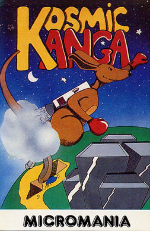
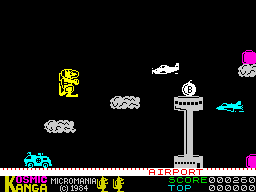

Kosmic Kanga


{kind=link}

| Publisher: | Micromania |
| Price: | £5.95 |
| Year: | 1984 |
| Source: | CRASH, Issue 7 |

Kosmic Kanga is an entirely novel game for the Spectrum by Dominic Wood who brought us Tutankhamun, Pengy and one of the best simple shoot em ups for the Stack Light Rifle, Invasion Force. All our reviewers agreed that this is not only a very original game, but also the best yet from Micromania.

At the outset, we must point out that there aren’t as many screens as were suggested in our competition earlier, the main reason being that in putting the original concept together as a completed program, Micromania felt that it was getting too unwieldy and spoiling the playability.
The basic object of the game is to guide Kanga home, back to his base on the Moon. This takes him through eleven different screens; the Airport, the Desert, a bonus screen, the Ocean, Atlantis, a bonus screen, the Beach, the Country, a bonus screen, the City and finally the Moon. Each of the main screens is actually a very large playing area since they scroll from right to left for quite some time. Before each screen starts there is a status panel informing you of the nature of the enemies ahead and the objects to be collected, played to the tune of Tie me Kangaroo Down Sport. The bonus screens are only a screen wide, but they are designed to scroll vertically and so are quite high in total playing area.
Kanga is controlled by his jumping. He can be moved left or right as far as the scrolling screen will allow, but there is considerable manoeuvring possible by making higher or lower jumps. Points are gained by collecting objects which may be on the ground, floating on clouds or on the backs of whales in the sea, they may be on the tops of tall buildings. Some objects are dangerous, like bombs, but the biggest danger comes from the various deadly objects which fly along with the screen scroll. For his protection, Kanga can do what Kangaroos have always done, hurl boxing gloves at his enemies. All the playing screens are shown in the excellent demo.
CRITICISM
‘Kosmic Kanga is a really original game. The graphics are very good. So too is the playability. Generally I enjoyed this game enough to consider it a contender for a game of the month. The bouncing is a little difficult to co-ordinate at first, but with a little practice it soon becomes more predictable. Graphics are varied, detailed, smooth moving, and everything goes along well in what is a very good game.’
‘The finish on Kosmic Kanga is good — lots of small details been used to add to playability. Each little pre-screen intro which warns you of what you are about to face, is a little gem in itself, fully animated bright lights effect the tune, and all the items listed dancing in animation to it. I also liked the small Kangas at the base of the screen which tell you how many men you have left. When a new life starts the screen Kanga appears from the top down as though materialised from all his atoms, and dies in reverse — so too do the small Kangas for that ‘life’. Bouncing becomes quite an art once you get the hang of it. Moving left or right only works when you touch the ground, so the skill required to get through even one screen, let alone all eleven, is quite high. The graphics are excellent, all recognisable and very well drawn. Although there is little real animation as such, this doesn’t matter because of the scrolling screen. I found the game playable and fun, and very addictive, because you do want to get on and see how far you can go and what comes next (the demo invariably falls to get very far into a screen).’
‘Micromania are right — this is a totally original game, although I am sure I have seen a game for another machine or something in the arcade which has a boxing kangaroo in it, but not like this one anyway. There are many good looking sections to the game each requiring its own skill level and tactics. The way that Kanga bounces is very good even though he isn’t really animated. Graphics are detailed, colourful and move quickly and smoothly. A cheerful, tuneful sort of game with a certain bounce to it!’
COMMENTS
| Control keys: | N/M left/right, increase jump = A, decrease height = Z, remaining keys on bottom row to throw a glove |
| Joystick: | Kempston, ZX 2, Protek, AGF |
| Keyboard play: | Responsive, one reviewer thought they were all a little low down the keyboard |
| Use of colour: | Very good |
| Graphics: | Very good and varied, quite large |
| Sound: | Good tune, nice effects, not continuous |
| Skill levels: | 1 |
| Lives: | 4 |
| Screens: | 11 with much greater playing area |
| Originality: | Highly original |
| General rating: | A new, lively and well implemented game, playable and addictive, good value for money, highly recommended. |
| Use of computer: | 79% |
| Graphics: | 87% |
| Playability: | 89% |
| Getting started: | 93% |
| Addictive qualities: | 88% |
| Value for money: | 89% |
| Overall: | 88% |